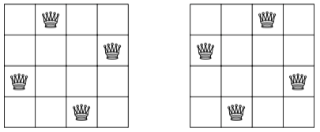
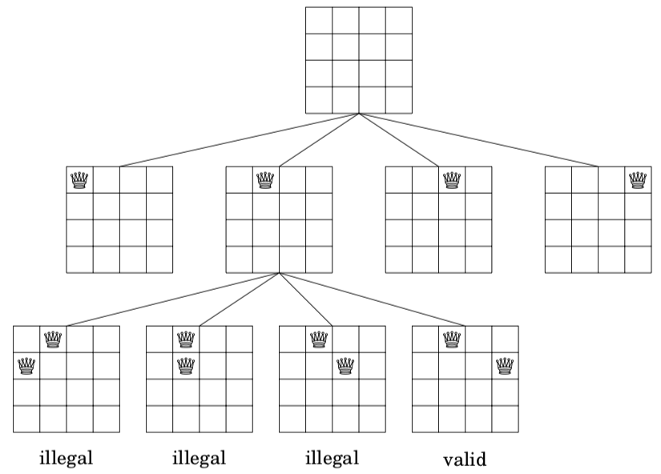

8. complete search and backtracking 搜索与回溯¶
8.1. 概念¶
搜索，也就是对状态空间进行枚举，通过穷尽所有的可能来找到最优解，或者统计合法解的个数。
Complete search，我们在学习递归的时候，就了解到了。递归枚举子集，递归枚举组合，递归枚举排列，是三个入门的问题。
在讲到搜索的时候，会有几个概念，<深度优先搜索、深度优先遍历>，<宽度优先搜索、宽度优先遍历>（也叫广度优先搜索）。遍历呢，一般是指图上的搜索。我们在学习搜索的时候，主要是指学习深度优先搜索。
下面这段话，用来理解和区分这几个常用的概念问题。depth first search(dfs)， 按照深度优先的顺序对“问题状态空间”进行搜索的算法（理解理解搜索树，是不是深度优先?）。“深搜”，是一种包括遍历形式、状态记录与检索、剪枝优化等算法整体设计的统称。提前学习建图方法后，掌握在图上进行遍历，进一步把“问题空间”类比为一张图。研究dfs算法之前，要定义该过程产生的 “搜索树” 结构，整个深搜算法就是基于该搜索树完成的*（用递归实现的指数型枚举、排列性枚举、组合型枚举，其实就是深搜的三种最简单的形式）*。dfs，常常指利用递归函数实现暴力枚举的算法。递归搜索，该类搜索算法的特点在于，将要搜索的目标分成若干“层”，每层基于前几层的状态进行决策，直到达到目标状态。
（不要过多纠结于名词概念，能够inplementation才是王道。）
8.2. Complete search（例题）¶
Complete search is a general method that can be used to solve almost any algorithm problem. The idea is to generate all possible solutions to the problem using brute force, and then select the best solution or count the number of solutions, depending on the problem.
Complete search is a good technique if there is enough time to go through all the solutions, because the search is usually easy to implement and it always gives the correct answer. If complete search is too slow, other techniques, such as greedy algorithms or dynamic programming, may be needed.
8.3. 将正整数拆分问题（例题）¶
//问题1：
将正整数 n 分解成3个正整数，如 6 = 1 + 2 + 3，
排在后面的数必须大于等于前面的数，输出所有方案。
-- 循环实现
-- 递归实现
//问题2：
将正整数 n 分解成 小于等于m 个正整数之和，
且排在后面的数必须 大于等于 前面的数，并输出所有方案。
输入：
4 3
输出：
1 1 2
1 3
2 2
4
对于问题1，我们可以使用循环处理，using 3 loops
for (int i = 1; i <= n; ++i)
for (int j = i; j <= n; ++j)
for (int k = j; k <= n; ++k)
if (i + j + k == n) printf("%d=%d+%d+%d\n", n, i, j, k);
如果问题变成“将正整数n分解成4个正整数”，此时就需要4重循环。如果问题变成“分解成小于等于m个整数”，那么，就没办法使用loops去弄了，需要使用递归搜索。
下面，我们考虑问题2。（用搜索树，来表示）
我们将问题分层，第 i 层决定 ai。则为了进行第 i 层决策，我们需要记录三个状态变量：
n - sum of (a1...ai)，表示后面所有正整数的和；a_(i-1)，表示前一层的正整数，以确保正整数递增；Latex: ($a_{i-1}$)i，确保我们最多输出 m 个正整数。
//arr[]记录方案
void dfs(int n, int i, int a) {
if (n == 0) {
//输出方案
}
if (i <= m) {
for (int j = a; j <= n; j++) {
arr[i] = j;
dfs(n - j, i + 1, j); //剩余n-j, 分解了i+1个数，前一个数用的是j
}
}
}
dfs(n, 1, 1);
请上机操作，把问题1，用递归实现。
8.4. backtracking回溯（例题）¶
回溯法是一种经常被用在深度深度优先搜索（DFS）和广度优先搜索（BFS）的技巧。其本质是：走不通就回头。关键词：恢复现场。
常见例题，八皇后问题（用搜索树，来表示）
As an example, consider the problem of calculating the number of ways n queens can be placed on an n × n chessboard so that no two queens attack each other. For example, when n = 4, there are two possible solutions:

The problem can be solved using backtracking by placing queens to the board row by row. More precisely, exactly one queen will be placed on each row so that no queen attacks any of the queens placed before. A solution has been found when all n queens have been placed on the board.
For example, when n = 4, some partial solutions generated by the backtracking algorithm are as follows:

At the bottom level, the three first configurations are illegal, because the queens attack each other. However, the fourth configuration is valid and it can be extended to a complete solution by placing two more queens to the board. There is only one way to place the two remaining queens.
void search(int y) {
if (y == n) {
count++;
return;
}
for (int x = 0; x < n; x++) {
if (column[x] || diag1[x+y] || diag2[x-y+n-1]) continue;
column[x] = diag1[x+y] = diag2[x-y+n-1] = 1;
search(y+1);
column[x] = diag1[x+y] = diag2[x-y+n-1] = 0;
}
}
search(0); //调用
Let q(n) denote the number of ways to place n queens on an n × n chessboard. The above backtracking algorithm tells us that, for example, q(8) = 92。（记忆：八皇后问题有92种方案）
//按行枚举
//对角线 dg[u+i]，反对角线udg[n−u+i]中的下标
//u+i和 n−u+i 表示的是截距
//（1）反对角线 y=x+b, 截距 b=y−x，因为我们要把 b 当做数组下标，所以 b 不能是负的
//所以我们 +n，保证是结果是正的
//（2）而对角线 y=−x+b, 截距是 b=y+x，这里截距一定是正的，所以不需要加偏移量
#include <iostream>
using namespace std;
const int N = 20;
// bool数组用来判断搜索的下一个位置是否可行
// col列，dg对角线，udg反对角线
// g[N][N]用来存路径
int n;
char g[N][N];
bool col[N], dg[N], udg[N];
void dfs(int u)
{
// u == n 表示已经搜了n行，故输出这条路径
if (u == n)
{
for (int i = 0; i < n; i ++ ) puts(g[i]); // 等价于cout << g[i] << endl;
puts(""); // 换行
return;
}
//对n个位置按行搜索
for (int i = 0; i < n; i ++ )
//剪枝(对于不满足要求的点，不再继续往下搜索)
//udg[n - u + i]，+n是为了保证大于0
if (!col[i] && !dg[u + i] && !udg[n - u + i])
{
g[u][i] = 'Q';
col[i] = dg[u + i] = udg[n - u + i] = true;
dfs(u + 1);
// 恢复现场 这步很关键
col[i] = dg[u + i] = udg[n - u + i] = false;
g[u][i] = '.';
}
}
int main()
{
cin >> n;
for (int i = 0; i < n; i ++ )
for (int j = 0; j < n; j ++ )
g[i][j] = '.';
dfs(0);
return 0;
}
//按每个元素进行枚举
#include <iostream>
using namespace std;
const int N = 20;
// 因为是一个个搜索，所以加了row
int n;
char g[N][N];
bool row[N], col[N], dg[N], udg[N];
// s表示已经放上去的皇后个数
void dfs(int x, int y, int s)
{
// 处理超出边界的情况
if (y == n) y = 0, x ++ ;
// 说明已经放好了n个皇后，表示枚举完 n^2 个了
if (x == n)
{
if (s == n)
{
for (int i = 0; i < n; i ++ ) puts(g[i]);
puts("");
}
return;
}
// 不放皇后 就往下搜下一个位置
dfs(x, y + 1, s);
// 放皇后
if (!row[x] && !col[y] && !dg[x + y] && !udg[x - y + n])
{
g[x][y] = 'Q';
row[x] = col[y] = dg[x + y] = udg[x - y + n] = true;
dfs(x, y + 1, s + 1);
row[x] = col[y] = dg[x + y] = udg[x - y + n] = false;
g[x][y] = '.';
}
}
int main()
{
cin >> n;
for (int i = 0; i < n; i ++ )
for (int j = 0; j < n; j ++ )
g[i][j] = '.';
dfs(0, 0, 0);
return 0;
}
8.5. 更进一步的拓展（*）¶
8.5.1. 数字三角形模型¶
// Given grid of positive numbers, Start from 0, 0 and end at n, n. Move only to right and down - find path with sum of numbers is maximum.
/*
15
24
512
678
189
*/
int grid[MAX][MAX];
// Think in function F(i, j) that find solution from (i, j) to (n, n)
int maxPathSum(int r, int c)
{
if( !valid(r, c))
return 0;
if (r == n-1 && c == n-1)
return grid[r][c]; // base
int path1 = maxPathSum(r, c+1); // right
int path2 = maxPathSum(r+1, c); // down
return grid[r][c] + max(path1, path2);
}
8.5.2. 迷宫是否可以走出¶
/*
.SX..
..X.E
....X
X.XX.
*/
char maze[MAX][MAX]; // filled with S (for start), E (for end), . (could pass) and X (block can't path)
bool findEnd(int r, int c) // Recursion State: r, c
{
if( !valid(r, c) || maze[r][c] == 'X')
return false; // invalid position or block position
if( maze[r][c] =='E')
return true; // we found End
// Try the 4 neighbor cells
if(findEnd(r, c-1)) return true; // search up
if(findEnd(r, c+1)) return true; // search down
if(findEnd(r-1, c)) return true; // search left
if(findEnd(r+1, c)) return true; // search right
// Can't find a way for it!
return false;
}
// This code will go to infinity! ... we need to avoid cycles. Mark visited cells
bool vis[MAX][MAX];
bool findEnd2(int r, int c) // Recursion State: r, c and FULL visted array
{
if( !valid(r, c) || maze[r][c] == 'X' || vis[r][c] == 1)
return false; // invalid position or block position
vis[r][c] = 1; // we just visited it, don't allow any one bacl to it
if( maze[r][c] =='E')
return true; // we found End
// Try the 4 neighbor cells
if(findEnd2(r, c-1)) return true; // search up
if(findEnd2(r, c+1)) return true; // search down
if(findEnd2(r-1, c)) return true; // search left
if(findEnd2(r+1, c)) return true; // search right
vis[r][c] = 0; // undo marking, other paths allowed to use it now
// Can't find a way for it!
return false;
}
8.5.3. Flood Fill¶
// Flood Fill...given maze where cells are . or X. You start at 0, 0..how many cells you could reach?
/*
..X.
.X.X
..X.
...x.
..x..
.x...
x....
....X...
....XXXX
..X.....
.X....XX
..X.X.X.
..X...X.
...X..XX
*/
// A reachable block is called connected components. Each set of positions reachable together are connected component.
int cnt = 0;
void cntReachalbleCells(int r, int c)
{
if( !valid(r, c) || maze[r][c] == 'X' || vis[r][c] == 1)
return; // invalid position or block position
vis[r][c] = 1; // we just visited it, don't allow any one back to it
cnt++;
// Try the 4 neighbor cells
cntReachalbleCells(r, c-1);
cntReachalbleCells(r, c+1);
cntReachalbleCells(r-1, c);
cntReachalbleCells(r+1, c);
}
// What about finding number of connected components?
void cntComponents(int R, int C)
{
int comps = 0;
for(int i = 0; i < R; ++i)
{
for(int j = 0; j < C; ++j)
{
cnt = 0;
cntReachalbleCells(i, j);
if(cnt > 0) comps++;
}
}
}
8.5.4. generate all sequences of given length, of zeros and ones¶
//
// E.g. for len = 3: 000, 001, 010, 011, 100, 101, 110, 111
// "" Count=1
// 0 1 Count=2
// 00 01 10 11 Count=4
// 000 001 010 011 100 101 110 11 Count=8
//
void generateBinary(int len, string cur = "") // recursion state: integer, string
{
if(len == 0)
{
cout<<cur<<"\n";
return;
}
// At each level, we branch twice...draw this tree
generateBinary(len-1, cur + "0");
generateBinary(len-1, cur + "1");
}
8.5.5. generate all sequences of given length, of zeros, ones and two2¶
// generate all sequences of given length, of zeros, ones and two2
// E.g. for len = 2: 00, 01, 02, 10, 11, 12, 20, 21, 22
void generateTernary(int len, string cur = "")
{
if(len == 0)
{
cout<<cur<<"\n";
return;
}
// At each level, we branch three times...draw this tree
generateTernary(len-1, cur + "0");
generateTernary(len-1, cur + "1");
generateTernary(len-1, cur + "2");
}
8.5.6. 排列枚举¶
// Print all possible permutations of numbers 0, 1, 2, ...n-1
void perm(int i, int n, int vis[], int cur[])
{
if(i == n)
{
for (int j = 0; j < n; ++j) cout<<cur[j];
cout<<"\n";
return;
}
for (int j = 0; j < n; ++j) if(!vis[j])
{
vis[j] = 1;
cur[i] = j;
perm(i+1, n, vis, cur);
vis[j] = 0;
}
}
8.5.7. 组合枚举¶
// print N choose M combinations
void comb(int i, int n, int m, int cur[], int curLen)
{
if(curLen == m)
{
for (int j = 0; j < m; ++j)
cout<<cur[j];
cout<<"\n";
return;
}
if(i == n) // we reached end, and have current combination is not correct
return;
// take it
cur[curLen] = i;
comb(i+1, n, m, cur, curLen+1);
// don't take it
comb(i+1, n, m, cur, curLen);
}
8.6. 递归的代码框架¶
// version 1
// Typical backtracking procedure
void recursion(state s)
{
if( base(s) )
return ;
for each substate ss
mark ss
recursion (ss)
unmark ss
}
// version 2
int ans = 最坏情况, now; // now为当前答案
void dfs(传入数值) {
if (到达目的地) ans = 从当前解与已有解中选最优;
for (遍历所有可能性)
if (可行) {
进行操作;
dfs(缩小规模);
撤回操作;
}
}
8.7. 关于递归调用次数的实验¶
此处需要上机实验
// Could we do recursion calls as we want? NO, you have stack limit size.
// Say your function call reserve 1 integer (4 bytes) and a call need 2 pointers (8 bytes) for saving some return addresses
// Say you have 1.5MB stack size, then you could do maximum 1.5MB / 12 bytes ~= 144617 call
int dep = 0;
void stackTest1()
{
cout<<dep++<<"\n"<<flush;
stackTest1();
}
void stackTest2(int a = 1)
{
cout<<dep++<<"\n"<<flush;
stackTest2(a);
}
void stackTest3()
{
cout<<dep++<<"\n"<<flush;
int arr[50]; // be careful from your created items. E.g. Integrs, Strings, Structs.
stackTest3();
}
void stackTest4()
{
cout<<dep++<<"\n"<<flush;
int arr[100]; // be careful from your created items. E.g. Integrs, Strings, Structs.
stackTest4();
}
void stackTest5()
{
cout<<dep++<<"\n"<<flush;
int arr[50];
vector<int> v(50); // Its internal array on heap not on stack
stackTest5();
}
void stackTest6()
{
cout<<dep++<<"\n"<<flush;
int arr[50];
vector<int> v(1000); // Its internal array on heap not on stack. Then watch from heap too
stackTest6();
}
void stackTest7()
{
cout<<dep++<<"\n"<<flush;
int arr[1000];
stackTest7();
}
void stackTest8()
{
cout<<dep++<<"\n"<<flush;
int arr[1000000]; // So big for my MACHINE stack limit
stackTest8();
}
void stackTest9(int a[]) // this is array reference. it behaves as if it is just an integer
{
cout<<dep++<<"\n"<<flush;
stackTest9(a);
}
int arr[1000000];
int main()
{
stackTest9(arr);
return 0;
}
8.8. How to avoid stack problems（记忆化出场）¶
// 1- If must do it in recursion, then avoid any unnecessary local data. Move to global as possible
// 2- Move to iterative procedure
// 3- Implement your own stack calls!
// Fibonacci Series: Fib(n) = fib(n-1) + fib(n-2). Fib(0) = fib(1) = 1
int fib(int n)
{
if(n <= 1)
return 1;
return fib(n-2) + fib(n-1);
}
// what is search space? n
// what is number of recursive calls? We are branching every time to 2 levels that differs in 1
// fib(5)
// fib(4) fib(3)
// fib(3) fib(2) fib(2) fib(1)
// fib(2) fib(1) fib(1) fib(0) fib(1) fib(0)
// fib(1) fib(1)
//
// We almost have 2^N calls
// Wait, a space of N, is called 2^N times!
// A fib of 50 do around ~1125899906842624 call!!!!!!
//
// Then, we must call a state more than once? and it too call other states, that already called!
//
// Check tree above, fib(3) called twice. Fib(2) called three times!
//
// Let's SAVE the answer, and let space of N is called 2N times!
int savedAnswers[MAX]; /// Initialized to -1, means no answer
int fibSave(int n)
{
if(n <= 1)
return 1;
if(savedAnswers[n] != -1)
return savedAnswers[n];
return savedAnswers[n] = fib(n-2) + fib(n-1);
}
// fib(5)=8
// fib(4)=5 fib(3)=3
// fib(3)=3 fib(2)=2
// fib(2)=2 fib(1)=1
// fib(1)=1 fib(1)=1
8.9. memoization记忆化¶
记忆化搜索，是在学习动态规划的时候，用到的。用记忆化搜索的方式，实现dp。在这个章节，练习题目时，也请感受一下记忆化操作。
//记忆化模板
int g[MAXN]; // 定义记忆化数组
int ans = 最坏情况, now;
void dfs f(传入数值) {
if (g[规模] != 无效数值) return; // 或记录解，视情况而定
if (到达目的地) ans = 从当前解与已有解中选最优; // 输出解，视情况而定
for (遍历所有可能性)
if (可行) {
进行操作;
dfs(缩小规模);
撤回操作;
}
}
int main() {
memset(g, 无效数值, sizeof(g)); // 初始化记忆化数组
}
8.10. 《一本通》题目¶
8.10.1. 【例5.2】组合的输出¶
//递归实现组合枚举
8.10.2. 【例5.3】自然数的拆分¶
//拆分成若干个小于n的自然数之和
8.10.8. 棋盘问题¶
//方法一
//棋盘形状是不规则的，只能在 # 位置上摆放。两个棋子不能同行同列，摆放k个棋子，有多少种方案。设计一个带参数的dfs函数
void dfs(int u, int num) 枚举到第u行，已经摆放了num个棋子
for (int i = u; i < n; i++)
for (int j = 0; j < n; j++){
if (!col[j] && g[i][j] == '#'){
col[j] = true;
dfs(i + 1, num + 1);
col[j] = false;
}
}
dfs(0, 0);
//方法二
// 这种就回归到类似八皇后的代码结构上，但道理是相通的
// 这一行，枚举有没有能选的
// 这一行，压根不选，直奔下一行
void dfs(int u, int num)
{
if (u == n){
if (num == k){
res++;
}
return ;
}
for (int j = 0; j < n; j++){
if (s[u][j] == '#' && !col[j]){
col[j] = true;
dfs(u + 1, num + 1);
col[j] = false;
}
}
dfs(u + 1, num);
}
dfs(0, 0);
8.10.9. 取石子游戏¶
//从较多的那堆里取，取较少那堆的整数倍，最后把一堆棋子取空，就是赢家。多组数据，问先手是不是赢家。
//a / b >= 2, 先手必胜。
//a / b < 2, 先手只有一种取法。
//a / b >= 2，先手必胜。神奇的性质。
8.10.10. 马走日¶
//给出起始位置，问有多少方案可以遍历到棋盘上的所有点。
//num是已经遍历点的个数
void dfs(int x, int y, int num)
//用数组控制8个方向的写法，判断点合法性的方法
8.10.11. 单词接龙【难】¶
//要拼成的单词长度尽可能的长，两个单词重合的部分就会尽可能的少。
if (a.substr(a.size() - k, k) == b.substr(0, k))
用g[i][j] = k 维护两个单词之间重叠关系
void dfs(string dragon, int last){
//...
vis[last]++;
for (int i = 0; i < n; i++)
if (g[last][i] && vis[i] < 2)
dfs(dragon + s[i].substr(g[last][i]), i);
vis[last]--;
//...
}
//调用
dfs(s[i], i);
8.10.12. 分成互质组【难】¶
//方法一：拿着鸡蛋去往篮子里放，有合适的放或者不放，没有合适的就先开一个篮子
//爆搜，每一个位置有两种操作
//对已有的每一个组进行枚举，看能不能放进去
//新建一个组，放进去
//方法二：鸡蛋一排摆在地上，拿着篮子去挑鸡蛋
void dfs(int g, int gc, int tc, int start) //group count total count
{
if (g >= res) return ;
if (tc == n) res = min(res, g);
bool flag = true;
for (int i = start; i < n; i++)
if (!st[i] && check(group[g], gc, i)){ //传进去的是一个一维数组
st[i] = true;
group[g][gc] = i;
dfs(g, gc + 1, tc + 1, i + 1);
st[i] = false;
flag = false;
}
if (flag) dfs(g + 1, 0, tc, 0); //从0号下标开始搜
}
//调用
dfs(1, 0, 0, 0);
8.11. 例题程序¶
//将正整数n分解成 小于等于m个 正整数之和，且排在后面的数必须大于等于前面的数，并输出所有方案
//问题2的递归实现
#include <bits/stdc++.h>
using namespace std;
int n, m;
int a[110];
void dfs(int left, int u, int prev)
{
if (left == 0){
for (int i = 1; i < u; i++) printf("%d ", a[i]);
puts("");
return ;
}
if (u > m) return ;
for (int i = prev; i <= left; i++){
a[u] = i;
dfs(left - i, u + 1, i);
}
}
int main()
{
cin >> n >> m;
dfs(n, 1, 1); //剩余n可分配，当前第1位，可以从1开始用
return 0;
}
//把n恰好分成m个正整数的方案，问题1的递归实现
#include <bits/stdc++.h>
using namespace std;
int n, m;
int a[110];
void dfs(int left, int u, int prev)
{
if (left == 0){
if (u == m + 1){
for (int i = 1; i < u; i++) printf("%d ", a[i]);
puts("");
}
return ;
}
if (u > m) return ;
for (int i = prev; i <= left; i++){
a[u] = i;
dfs(left - i, u + 1, i);
}
}
int main()
{
cin >> n >> m;
dfs(n, 1, 1); //剩余n可分配，当前第1位，可以从1开始用
return 0;
}
//重新设计一个dfs函数，这回是带用了多少作为参数
//把n恰好分成m个正整数的方案，问题1的递归实现
#include <bits/stdc++.h>
using namespace std;
int n, m;
int A[110];
void dfs(int u, int sum, int a) //当前第u个，已经分配了sum，可以从a开始用
{
if (u == m + 1)
{
if (sum == n){
for (int i = 1; i <= m; i++) printf("%d ", A[i]);
puts("");
}
return ;
}
for (int j = a; j <= n; j++){
A[u] = j;
dfs(u + 1, sum + j, j);
}
}
int main()
{
cin >> n >> m;
dfs(1, 0, 1);
return 0;
}